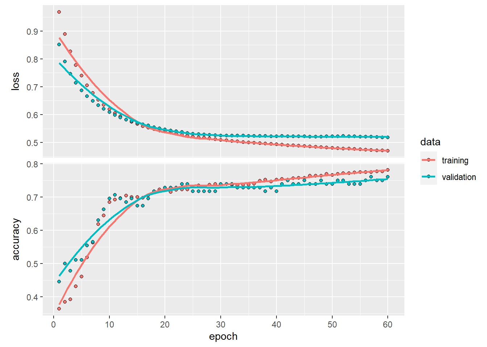
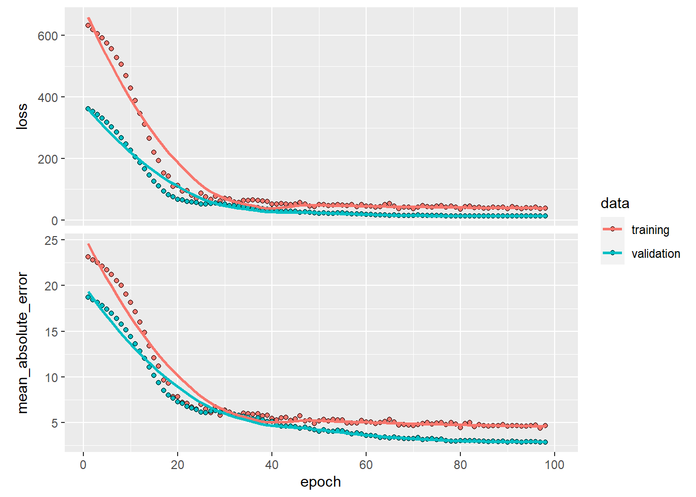

3 Deep learning
3.1 Deep neural network
3.1.1 Load data
# load the Pima Indians dataset from the mlbench dataset
library(mlbench)
data(PimaIndiansDiabetes)
# rename dataset to have shorter name because lazy
diabetes <- PimaIndiansDiabetes
data.set <- diabetes
# datatable(data.set[sample(nrow(data.set),
# replace = FALSE,
# size = 0.005 * nrow(data.set)), ])summary(data.set)## pregnant glucose pressure triceps
## Min. : 0.000 Min. : 0.0 Min. : 0.00 Min. : 0.00
## 1st Qu.: 1.000 1st Qu.: 99.0 1st Qu.: 62.00 1st Qu.: 0.00
## Median : 3.000 Median :117.0 Median : 72.00 Median :23.00
## Mean : 3.845 Mean :120.9 Mean : 69.11 Mean :20.54
## 3rd Qu.: 6.000 3rd Qu.:140.2 3rd Qu.: 80.00 3rd Qu.:32.00
## Max. :17.000 Max. :199.0 Max. :122.00 Max. :99.00
## insulin mass pedigree age diabetes
## Min. : 0.0 Min. : 0.00 Min. :0.0780 Min. :21.00 neg:500
## 1st Qu.: 0.0 1st Qu.:27.30 1st Qu.:0.2437 1st Qu.:24.00 pos:268
## Median : 30.5 Median :32.00 Median :0.3725 Median :29.00
## Mean : 79.8 Mean :31.99 Mean :0.4719 Mean :33.24
## 3rd Qu.:127.2 3rd Qu.:36.60 3rd Qu.:0.6262 3rd Qu.:41.00
## Max. :846.0 Max. :67.10 Max. :2.4200 Max. :81.003.1.2 Process data and variable
data.set$diabetes <- as.numeric(data.set$diabetes)
data.set$diabetes=data.set$diabetes-1
head(data.set$diabetes)## [1] 1 0 1 0 1 0head(data.set)## pregnant glucose pressure triceps insulin mass pedigree age diabetes
## 1 6 148 72 35 0 33.6 0.627 50 1
## 2 1 85 66 29 0 26.6 0.351 31 0
## 3 8 183 64 0 0 23.3 0.672 32 1
## 4 1 89 66 23 94 28.1 0.167 21 0
## 5 0 137 40 35 168 43.1 2.288 33 1
## 6 5 116 74 0 0 25.6 0.201 30 0str(data.set)## 'data.frame': 768 obs. of 9 variables:
## $ pregnant: num 6 1 8 1 0 5 3 10 2 8 ...
## $ glucose : num 148 85 183 89 137 116 78 115 197 125 ...
## $ pressure: num 72 66 64 66 40 74 50 0 70 96 ...
## $ triceps : num 35 29 0 23 35 0 32 0 45 0 ...
## $ insulin : num 0 0 0 94 168 0 88 0 543 0 ...
## $ mass : num 33.6 26.6 23.3 28.1 43.1 25.6 31 35.3 30.5 0 ...
## $ pedigree: num 0.627 0.351 0.672 0.167 2.288 ...
## $ age : num 50 31 32 21 33 30 26 29 53 54 ...
## $ diabetes: num 1 0 1 0 1 0 1 0 1 1 ...- transform dataframe into matrix
# Cast dataframe as a matrix
data.set <- as.matrix(data.set)
# Remove column names
dimnames(data.set) = NULLhead(data.set)## [,1] [,2] [,3] [,4] [,5] [,6] [,7] [,8] [,9]
## [1,] 6 148 72 35 0 33.6 0.627 50 1
## [2,] 1 85 66 29 0 26.6 0.351 31 0
## [3,] 8 183 64 0 0 23.3 0.672 32 1
## [4,] 1 89 66 23 94 28.1 0.167 21 0
## [5,] 0 137 40 35 168 43.1 2.288 33 1
## [6,] 5 116 74 0 0 25.6 0.201 30 03.1.3 Split data into training and test datasets
- including
xtrain ytrian xtest ytest
# Split for train and test data
set.seed(100)
indx <- sample(2,
nrow(data.set),
replace = TRUE,
prob = c(0.8, 0.2)) # Makes index with values 1 and 2# Select only the feature variables
# Take rows with index = 1
x_train <- data.set[indx == 1, 1:8]
x_test <- data.set[indx == 2, 1:8]# Feature Scaling
x_train <- scale(x_train )
x_test <- scale(x_test )y_test_actual <- data.set[indx == 2, 9]- transform target as on-hot-coding format
# Using similar indices to correspond to the training and test set
y_train <- to_categorical(data.set[indx == 1, 9])
y_test <- to_categorical(data.set[indx == 2, 9])
head(y_train)## [,1] [,2]
## [1,] 0 1
## [2,] 1 0
## [3,] 0 1
## [4,] 1 0
## [5,] 0 1
## [6,] 1 0head(data.set[indx == 1, 9],20)## [1] 1 0 1 0 1 0 0 1 1 0 0 1 1 1 1 1 0 1 0 0- dimension of four splitting data sets
dim(x_train)## [1] 609 8dim(y_train)## [1] 609 2dim(x_test)## [1] 159 8dim(y_test)## [1] 159 23.1.4 Creating neural network model
3.1.4.1 construction of model
- the output layer contains 3 levels
# Creating the model
model <- keras_model_sequential()
model %>%
layer_dense(name = "DeepLayer1",
units = 10,
activation = "relu",
input_shape = c(8)) %>%
# input 4 features
layer_dense(name = "DeepLayer2",
units = 10,
activation = "relu") %>%
layer_dense(name = "OutputLayer",
units = 2,
activation = "softmax")
# output 4 categories using one-hot-coding
summary(model)## Model: "sequential"
## ________________________________________________________________________________
## Layer (type) Output Shape Param #
## ================================================================================
## DeepLayer1 (Dense) (None, 10) 90
## DeepLayer2 (Dense) (None, 10) 110
## OutputLayer (Dense) (None, 2) 22
## ================================================================================
## Total params: 222
## Trainable params: 222
## Non-trainable params: 0
## ________________________________________________________________________________3.1.4.2 Compiling the model
# Compiling the model
model %>% compile(loss = "categorical_crossentropy",
optimizer = "adam",
metrics = c("accuracy"))3.1.4.3 Fitting the data and plot
history <- model %>%
fit(x_train,
y_train,
# adjusting number of epoch
epoch = 60,
# adjusting number of batch size
batch_size = 64,
validation_split = 0.15,
verbose = 2)## Epoch 1/60
## 9/9 - 1s - loss: 0.8349 - accuracy: 0.3482 - val_loss: 0.7918 - val_accuracy: 0.3587 - 631ms/epoch - 70ms/step
## Epoch 2/60
## 9/9 - 0s - loss: 0.8030 - accuracy: 0.3482 - val_loss: 0.7666 - val_accuracy: 0.3696 - 55ms/epoch - 6ms/step
## Epoch 3/60
## 9/9 - 0s - loss: 0.7746 - accuracy: 0.3540 - val_loss: 0.7460 - val_accuracy: 0.3587 - 34ms/epoch - 4ms/step
## Epoch 4/60
## 9/9 - 0s - loss: 0.7512 - accuracy: 0.3868 - val_loss: 0.7275 - val_accuracy: 0.3913 - 38ms/epoch - 4ms/step
## Epoch 5/60
## 9/9 - 0s - loss: 0.7306 - accuracy: 0.4062 - val_loss: 0.7120 - val_accuracy: 0.4457 - 36ms/epoch - 4ms/step
## Epoch 6/60
## 9/9 - 0s - loss: 0.7137 - accuracy: 0.4662 - val_loss: 0.6990 - val_accuracy: 0.5326 - 35ms/epoch - 4ms/step
## Epoch 7/60
## 9/9 - 0s - loss: 0.6994 - accuracy: 0.5126 - val_loss: 0.6885 - val_accuracy: 0.6087 - 36ms/epoch - 4ms/step
## Epoch 8/60
## 9/9 - 0s - loss: 0.6877 - accuracy: 0.5919 - val_loss: 0.6796 - val_accuracy: 0.6196 - 37ms/epoch - 4ms/step
## Epoch 9/60
## 9/9 - 0s - loss: 0.6773 - accuracy: 0.6325 - val_loss: 0.6710 - val_accuracy: 0.6630 - 37ms/epoch - 4ms/step
## Epoch 10/60
## 9/9 - 0s - loss: 0.6671 - accuracy: 0.6809 - val_loss: 0.6619 - val_accuracy: 0.6522 - 35ms/epoch - 4ms/step
## Epoch 11/60
## 9/9 - 0s - loss: 0.6564 - accuracy: 0.6905 - val_loss: 0.6535 - val_accuracy: 0.6522 - 34ms/epoch - 4ms/step
## Epoch 12/60
## 9/9 - 0s - loss: 0.6460 - accuracy: 0.7002 - val_loss: 0.6448 - val_accuracy: 0.6630 - 34ms/epoch - 4ms/step
## Epoch 13/60
## 9/9 - 0s - loss: 0.6362 - accuracy: 0.7118 - val_loss: 0.6370 - val_accuracy: 0.6739 - 43ms/epoch - 5ms/step
## Epoch 14/60
## 9/9 - 0s - loss: 0.6262 - accuracy: 0.7157 - val_loss: 0.6295 - val_accuracy: 0.6522 - 40ms/epoch - 4ms/step
## Epoch 15/60
## 9/9 - 0s - loss: 0.6172 - accuracy: 0.7176 - val_loss: 0.6216 - val_accuracy: 0.6630 - 42ms/epoch - 5ms/step
## Epoch 16/60
## 9/9 - 0s - loss: 0.6076 - accuracy: 0.7137 - val_loss: 0.6144 - val_accuracy: 0.6630 - 40ms/epoch - 4ms/step
## Epoch 17/60
## 9/9 - 0s - loss: 0.5986 - accuracy: 0.7118 - val_loss: 0.6068 - val_accuracy: 0.6630 - 43ms/epoch - 5ms/step
## Epoch 18/60
## 9/9 - 0s - loss: 0.5896 - accuracy: 0.7118 - val_loss: 0.6012 - val_accuracy: 0.6630 - 39ms/epoch - 4ms/step
## Epoch 19/60
## 9/9 - 0s - loss: 0.5828 - accuracy: 0.7118 - val_loss: 0.5959 - val_accuracy: 0.6630 - 40ms/epoch - 4ms/step
## Epoch 20/60
## 9/9 - 0s - loss: 0.5754 - accuracy: 0.7137 - val_loss: 0.5896 - val_accuracy: 0.6848 - 40ms/epoch - 4ms/step
## Epoch 21/60
## 9/9 - 0s - loss: 0.5681 - accuracy: 0.7195 - val_loss: 0.5840 - val_accuracy: 0.6957 - 40ms/epoch - 4ms/step
## Epoch 22/60
## 9/9 - 0s - loss: 0.5619 - accuracy: 0.7215 - val_loss: 0.5799 - val_accuracy: 0.6957 - 45ms/epoch - 5ms/step
## Epoch 23/60
## 9/9 - 0s - loss: 0.5566 - accuracy: 0.7215 - val_loss: 0.5759 - val_accuracy: 0.6957 - 43ms/epoch - 5ms/step
## Epoch 24/60
## 9/9 - 0s - loss: 0.5517 - accuracy: 0.7195 - val_loss: 0.5725 - val_accuracy: 0.7174 - 42ms/epoch - 5ms/step
## Epoch 25/60
## 9/9 - 0s - loss: 0.5469 - accuracy: 0.7234 - val_loss: 0.5704 - val_accuracy: 0.7283 - 40ms/epoch - 4ms/step
## Epoch 26/60
## 9/9 - 0s - loss: 0.5423 - accuracy: 0.7292 - val_loss: 0.5683 - val_accuracy: 0.7283 - 38ms/epoch - 4ms/step
## Epoch 27/60
## 9/9 - 0s - loss: 0.5382 - accuracy: 0.7253 - val_loss: 0.5657 - val_accuracy: 0.7283 - 36ms/epoch - 4ms/step
## Epoch 28/60
## 9/9 - 0s - loss: 0.5330 - accuracy: 0.7273 - val_loss: 0.5612 - val_accuracy: 0.7174 - 42ms/epoch - 5ms/step
## Epoch 29/60
## 9/9 - 0s - loss: 0.5281 - accuracy: 0.7215 - val_loss: 0.5575 - val_accuracy: 0.7283 - 43ms/epoch - 5ms/step
## Epoch 30/60
## 9/9 - 0s - loss: 0.5244 - accuracy: 0.7350 - val_loss: 0.5542 - val_accuracy: 0.7283 - 40ms/epoch - 4ms/step
## Epoch 31/60
## 9/9 - 0s - loss: 0.5209 - accuracy: 0.7389 - val_loss: 0.5510 - val_accuracy: 0.7283 - 41ms/epoch - 5ms/step
## Epoch 32/60
## 9/9 - 0s - loss: 0.5181 - accuracy: 0.7485 - val_loss: 0.5463 - val_accuracy: 0.7174 - 41ms/epoch - 5ms/step
## Epoch 33/60
## 9/9 - 0s - loss: 0.5157 - accuracy: 0.7563 - val_loss: 0.5424 - val_accuracy: 0.7283 - 49ms/epoch - 5ms/step
## Epoch 34/60
## 9/9 - 0s - loss: 0.5131 - accuracy: 0.7524 - val_loss: 0.5398 - val_accuracy: 0.7283 - 45ms/epoch - 5ms/step
## Epoch 35/60
## 9/9 - 0s - loss: 0.5100 - accuracy: 0.7524 - val_loss: 0.5383 - val_accuracy: 0.7174 - 41ms/epoch - 5ms/step
## Epoch 36/60
## 9/9 - 0s - loss: 0.5080 - accuracy: 0.7447 - val_loss: 0.5361 - val_accuracy: 0.7174 - 41ms/epoch - 5ms/step
## Epoch 37/60
## 9/9 - 0s - loss: 0.5058 - accuracy: 0.7408 - val_loss: 0.5328 - val_accuracy: 0.7283 - 44ms/epoch - 5ms/step
## Epoch 38/60
## 9/9 - 0s - loss: 0.5040 - accuracy: 0.7427 - val_loss: 0.5303 - val_accuracy: 0.7283 - 40ms/epoch - 4ms/step
## Epoch 39/60
## 9/9 - 0s - loss: 0.5017 - accuracy: 0.7524 - val_loss: 0.5280 - val_accuracy: 0.7283 - 41ms/epoch - 5ms/step
## Epoch 40/60
## 9/9 - 0s - loss: 0.4998 - accuracy: 0.7582 - val_loss: 0.5262 - val_accuracy: 0.7283 - 40ms/epoch - 4ms/step
## Epoch 41/60
## 9/9 - 0s - loss: 0.4983 - accuracy: 0.7563 - val_loss: 0.5262 - val_accuracy: 0.7283 - 37ms/epoch - 4ms/step
## Epoch 42/60
## 9/9 - 0s - loss: 0.4960 - accuracy: 0.7582 - val_loss: 0.5251 - val_accuracy: 0.7174 - 35ms/epoch - 4ms/step
## Epoch 43/60
## 9/9 - 0s - loss: 0.4943 - accuracy: 0.7544 - val_loss: 0.5238 - val_accuracy: 0.7283 - 35ms/epoch - 4ms/step
## Epoch 44/60
## 9/9 - 0s - loss: 0.4928 - accuracy: 0.7563 - val_loss: 0.5222 - val_accuracy: 0.7391 - 40ms/epoch - 4ms/step
## Epoch 45/60
## 9/9 - 0s - loss: 0.4911 - accuracy: 0.7563 - val_loss: 0.5204 - val_accuracy: 0.7391 - 43ms/epoch - 5ms/step
## Epoch 46/60
## 9/9 - 0s - loss: 0.4896 - accuracy: 0.7563 - val_loss: 0.5181 - val_accuracy: 0.7174 - 42ms/epoch - 5ms/step
## Epoch 47/60
## 9/9 - 0s - loss: 0.4875 - accuracy: 0.7582 - val_loss: 0.5173 - val_accuracy: 0.7174 - 42ms/epoch - 5ms/step
## Epoch 48/60
## 9/9 - 0s - loss: 0.4859 - accuracy: 0.7602 - val_loss: 0.5155 - val_accuracy: 0.7283 - 40ms/epoch - 4ms/step
## Epoch 49/60
## 9/9 - 0s - loss: 0.4842 - accuracy: 0.7602 - val_loss: 0.5149 - val_accuracy: 0.7391 - 38ms/epoch - 4ms/step
## Epoch 50/60
## 9/9 - 0s - loss: 0.4828 - accuracy: 0.7582 - val_loss: 0.5141 - val_accuracy: 0.7391 - 42ms/epoch - 5ms/step
## Epoch 51/60
## 9/9 - 0s - loss: 0.4816 - accuracy: 0.7602 - val_loss: 0.5141 - val_accuracy: 0.7283 - 35ms/epoch - 4ms/step
## Epoch 52/60
## 9/9 - 0s - loss: 0.4798 - accuracy: 0.7602 - val_loss: 0.5110 - val_accuracy: 0.7283 - 36ms/epoch - 4ms/step
## Epoch 53/60
## 9/9 - 0s - loss: 0.4786 - accuracy: 0.7602 - val_loss: 0.5083 - val_accuracy: 0.7391 - 39ms/epoch - 4ms/step
## Epoch 54/60
## 9/9 - 0s - loss: 0.4775 - accuracy: 0.7640 - val_loss: 0.5072 - val_accuracy: 0.7391 - 38ms/epoch - 4ms/step
## Epoch 55/60
## 9/9 - 0s - loss: 0.4761 - accuracy: 0.7621 - val_loss: 0.5062 - val_accuracy: 0.7391 - 42ms/epoch - 5ms/step
## Epoch 56/60
## 9/9 - 0s - loss: 0.4745 - accuracy: 0.7679 - val_loss: 0.5046 - val_accuracy: 0.7500 - 42ms/epoch - 5ms/step
## Epoch 57/60
## 9/9 - 0s - loss: 0.4734 - accuracy: 0.7660 - val_loss: 0.5032 - val_accuracy: 0.7500 - 41ms/epoch - 5ms/step
## Epoch 58/60
## 9/9 - 0s - loss: 0.4720 - accuracy: 0.7679 - val_loss: 0.5044 - val_accuracy: 0.7500 - 43ms/epoch - 5ms/step
## Epoch 59/60
## 9/9 - 0s - loss: 0.4708 - accuracy: 0.7737 - val_loss: 0.5038 - val_accuracy: 0.7500 - 41ms/epoch - 5ms/step
## Epoch 60/60
## 9/9 - 0s - loss: 0.4694 - accuracy: 0.7756 - val_loss: 0.5053 - val_accuracy: 0.7391 - 39ms/epoch - 4ms/stepplot(history)
3.1.5 Evaluation
3.1.5.1 Output loss and accuracy
using xtest and ytest data sets to evaluate the built model directly
model %>%
evaluate(x_test,
y_test)##
## 1/5 [=====>........................] - ETA: 0s - loss: 0.4675 - accuracy: 0.7812
## 5/5 [==============================] - 0s 1ms/step - loss: 0.4173 - accuracy: 0.8239## loss accuracy
## 0.4173100 0.82389943.1.5.2 Output the predicted classes and confusion matrix
pred <- model %>%
predict(x_test) %>% k_argmax() %>% k_get_value()
head(pred)## [1] 0 1 0 1 0 0table(Predicted = pred,
Actual = y_test_actual)## Actual
## Predicted 0 1
## 0 93 17
## 1 11 383.1.5.3 Output the predicted values
prob <- model %>%
predict(x_test) %>% k_get_value()
head(prob)## [,1] [,2]
## [1,] 0.9310095 0.06899054
## [2,] 0.1780493 0.82195073
## [3,] 0.9532230 0.04677695
## [4,] 0.4828612 0.51713884
## [5,] 0.9550243 0.04497571
## [6,] 0.6021045 0.397895463.1.5.4 Comparison between prob, pred, and ytest
comparison <- cbind(prob ,
pred ,
y_test_actual )
head(comparison)## pred y_test_actual
## [1,] 0.9310095 0.06899054 0 1
## [2,] 0.1780493 0.82195073 1 1
## [3,] 0.9532230 0.04677695 0 0
## [4,] 0.4828612 0.51713884 1 1
## [5,] 0.9550243 0.04497571 0 0
## [6,] 0.6021045 0.39789546 0 03.2 Deep neural networks for regression
3.2.1 Loading packages and data sets
library(readr)
library(keras)
library(plotly)data("Boston", package = "MASS")
data.set <- Bostondim(data.set)## [1] 506 143.2.2 Convert dataframe to matrix without dimnames
library(DT)
# Cast dataframe as a matrix
data.set <- as.matrix(data.set)
# Remove column names
dimnames(data.set) = NULL
head(data.set)## [,1] [,2] [,3] [,4] [,5] [,6] [,7] [,8] [,9] [,10] [,11] [,12]
## [1,] 0.00632 18 2.31 0 0.538 6.575 65.2 4.0900 1 296 15.3 396.90
## [2,] 0.02731 0 7.07 0 0.469 6.421 78.9 4.9671 2 242 17.8 396.90
## [3,] 0.02729 0 7.07 0 0.469 7.185 61.1 4.9671 2 242 17.8 392.83
## [4,] 0.03237 0 2.18 0 0.458 6.998 45.8 6.0622 3 222 18.7 394.63
## [5,] 0.06905 0 2.18 0 0.458 7.147 54.2 6.0622 3 222 18.7 396.90
## [6,] 0.02985 0 2.18 0 0.458 6.430 58.7 6.0622 3 222 18.7 394.12
## [,13] [,14]
## [1,] 4.98 24.0
## [2,] 9.14 21.6
## [3,] 4.03 34.7
## [4,] 2.94 33.4
## [5,] 5.33 36.2
## [6,] 5.21 28.7summary(data.set[, 14])## Min. 1st Qu. Median Mean 3rd Qu. Max.
## 5.00 17.02 21.20 22.53 25.00 50.00 hist( data.set[, 14])
(#fig:target variable histogram)Fig 1 Histogram of the target variable
3.2.3 Spiting training and test data
# Split for train and test data
set.seed(123)
indx <- sample(2,
nrow(data.set),
replace = TRUE,
prob = c(0.75, 0.25)) # Makes index with values 1 and 2x_train <- data.set[indx == 1, 1:13]
x_test <- data.set[indx == 2, 1:13]
y_train <- data.set[indx == 1, 14]
y_test <- data.set[indx == 2, 14]3.2.5 Creating the model
model <- keras_model_sequential() %>%
layer_dense(units = 25,
activation = "relu",
input_shape = c(13)) %>%
layer_dropout(0.2) %>%
layer_dense(units = 25,
activation = "relu") %>%
layer_dropout(0.2) %>%
layer_dense(units = 25,
activation = "relu") %>%
layer_dropout(0.2) %>%
layer_dense(units = 1)model %>% summary()## Model: "sequential_1"
## ________________________________________________________________________________
## Layer (type) Output Shape Param #
## ================================================================================
## dense_3 (Dense) (None, 25) 350
## dropout_2 (Dropout) (None, 25) 0
## dense_2 (Dense) (None, 25) 650
## dropout_1 (Dropout) (None, 25) 0
## dense_1 (Dense) (None, 25) 650
## dropout (Dropout) (None, 25) 0
## dense (Dense) (None, 1) 26
## ================================================================================
## Total params: 1,676
## Trainable params: 1,676
## Non-trainable params: 0
## ________________________________________________________________________________model %>% get_config()## {'name': 'sequential_1', 'layers': [{'class_name': 'InputLayer', 'config': {'batch_input_shape': (None, 13), 'dtype': 'float32', 'sparse': False, 'ragged': False, 'name': 'dense_3_input'}}, {'class_name': 'Dense', 'config': {'name': 'dense_3', 'trainable': True, 'batch_input_shape': (None, 13), 'dtype': 'float32', 'units': 25, 'activation': 'relu', 'use_bias': True, 'kernel_initializer': {'class_name': 'GlorotUniform', 'config': {'seed': None}}, 'bias_initializer': {'class_name': 'Zeros', 'config': {}}, 'kernel_regularizer': None, 'bias_regularizer': None, 'activity_regularizer': None, 'kernel_constraint': None, 'bias_constraint': None}}, {'class_name': 'Dropout', 'config': {'name': 'dropout_2', 'trainable': True, 'dtype': 'float32', 'rate': 0.2, 'noise_shape': None, 'seed': None}}, {'class_name': 'Dense', 'config': {'name': 'dense_2', 'trainable': True, 'dtype': 'float32', 'units': 25, 'activation': 'relu', 'use_bias': True, 'kernel_initializer': {'class_name': 'GlorotUniform', 'config': {'seed': None}}, 'bias_initializer': {'class_name': 'Zeros', 'config': {}}, 'kernel_regularizer': None, 'bias_regularizer': None, 'activity_regularizer': None, 'kernel_constraint': None, 'bias_constraint': None}}, {'class_name': 'Dropout', 'config': {'name': 'dropout_1', 'trainable': True, 'dtype': 'float32', 'rate': 0.2, 'noise_shape': None, 'seed': None}}, {'class_name': 'Dense', 'config': {'name': 'dense_1', 'trainable': True, 'dtype': 'float32', 'units': 25, 'activation': 'relu', 'use_bias': True, 'kernel_initializer': {'class_name': 'GlorotUniform', 'config': {'seed': None}}, 'bias_initializer': {'class_name': 'Zeros', 'config': {}}, 'kernel_regularizer': None, 'bias_regularizer': None, 'activity_regularizer': None, 'kernel_constraint': None, 'bias_constraint': None}}, {'class_name': 'Dropout', 'config': {'name': 'dropout', 'trainable': True, 'dtype': 'float32', 'rate': 0.2, 'noise_shape': None, 'seed': None}}, {'class_name': 'Dense', 'config': {'name': 'dense', 'trainable': True, 'dtype': 'float32', 'units': 1, 'activation': 'linear', 'use_bias': True, 'kernel_initializer': {'class_name': 'GlorotUniform', 'config': {'seed': None}}, 'bias_initializer': {'class_name': 'Zeros', 'config': {}}, 'kernel_regularizer': None, 'bias_regularizer': None, 'activity_regularizer': None, 'kernel_constraint': None, 'bias_constraint': None}}]}3.2.6 Compiling the model
model %>% compile(loss = "mse",
optimizer = optimizer_rmsprop(),
metrics = c("mean_absolute_error"))3.2.7 Fitting the model
history <- model %>%
fit(x_train,
y_train,
epoch = 100,
batch_size = 64,
validation_split = 0.1,
callbacks = c(callback_early_stopping(monitor = "val_mean_absolute_error",
patience = 5)),
verbose = 2)## Epoch 1/100
## 6/6 - 1s - loss: 635.4625 - mean_absolute_error: 23.2059 - val_loss: 353.7849 - val_mean_absolute_error: 18.4629 - 659ms/epoch - 110ms/step
## Epoch 2/100
## 6/6 - 0s - loss: 618.2263 - mean_absolute_error: 22.7803 - val_loss: 340.1495 - val_mean_absolute_error: 18.0887 - 34ms/epoch - 6ms/step
## Epoch 3/100
## 6/6 - 0s - loss: 597.6129 - mean_absolute_error: 22.3285 - val_loss: 324.8987 - val_mean_absolute_error: 17.6603 - 35ms/epoch - 6ms/step
## Epoch 4/100
## 6/6 - 0s - loss: 579.7430 - mean_absolute_error: 21.9084 - val_loss: 308.6501 - val_mean_absolute_error: 17.1908 - 35ms/epoch - 6ms/step
## Epoch 5/100
## 6/6 - 0s - loss: 555.2120 - mean_absolute_error: 21.3277 - val_loss: 290.0841 - val_mean_absolute_error: 16.6378 - 37ms/epoch - 6ms/step
## Epoch 6/100
## 6/6 - 0s - loss: 528.9460 - mean_absolute_error: 20.6868 - val_loss: 268.8921 - val_mean_absolute_error: 15.9818 - 40ms/epoch - 7ms/step
## Epoch 7/100
## 6/6 - 0s - loss: 501.7986 - mean_absolute_error: 19.9775 - val_loss: 246.9597 - val_mean_absolute_error: 15.2742 - 46ms/epoch - 8ms/step
## Epoch 8/100
## 6/6 - 0s - loss: 468.8557 - mean_absolute_error: 19.2006 - val_loss: 222.3495 - val_mean_absolute_error: 14.4348 - 36ms/epoch - 6ms/step
## Epoch 9/100
## 6/6 - 0s - loss: 432.4853 - mean_absolute_error: 18.2307 - val_loss: 196.1935 - val_mean_absolute_error: 13.4846 - 34ms/epoch - 6ms/step
## Epoch 10/100
## 6/6 - 0s - loss: 389.7554 - mean_absolute_error: 17.1371 - val_loss: 170.8972 - val_mean_absolute_error: 12.4920 - 33ms/epoch - 6ms/step
## Epoch 11/100
## 6/6 - 0s - loss: 340.0846 - mean_absolute_error: 15.7168 - val_loss: 145.4696 - val_mean_absolute_error: 11.4096 - 29ms/epoch - 5ms/step
## Epoch 12/100
## 6/6 - 0s - loss: 304.1541 - mean_absolute_error: 14.5563 - val_loss: 122.7136 - val_mean_absolute_error: 10.3454 - 30ms/epoch - 5ms/step
## Epoch 13/100
## 6/6 - 0s - loss: 257.3510 - mean_absolute_error: 13.2377 - val_loss: 101.0440 - val_mean_absolute_error: 9.2182 - 35ms/epoch - 6ms/step
## Epoch 14/100
## 6/6 - 0s - loss: 223.9479 - mean_absolute_error: 11.9308 - val_loss: 83.7003 - val_mean_absolute_error: 8.3100 - 31ms/epoch - 5ms/step
## Epoch 15/100
## 6/6 - 0s - loss: 198.8049 - mean_absolute_error: 11.0243 - val_loss: 73.5735 - val_mean_absolute_error: 7.8083 - 32ms/epoch - 5ms/step
## Epoch 16/100
## 6/6 - 0s - loss: 155.4627 - mean_absolute_error: 9.7130 - val_loss: 61.6540 - val_mean_absolute_error: 7.1124 - 33ms/epoch - 5ms/step
## Epoch 17/100
## 6/6 - 0s - loss: 139.3338 - mean_absolute_error: 9.0636 - val_loss: 54.7957 - val_mean_absolute_error: 6.6426 - 35ms/epoch - 6ms/step
## Epoch 18/100
## 6/6 - 0s - loss: 114.7651 - mean_absolute_error: 8.0610 - val_loss: 47.5429 - val_mean_absolute_error: 6.0470 - 34ms/epoch - 6ms/step
## Epoch 19/100
## 6/6 - 0s - loss: 111.9680 - mean_absolute_error: 8.0227 - val_loss: 42.9199 - val_mean_absolute_error: 5.7170 - 35ms/epoch - 6ms/step
## Epoch 20/100
## 6/6 - 0s - loss: 102.4945 - mean_absolute_error: 7.6795 - val_loss: 39.4930 - val_mean_absolute_error: 5.5643 - 35ms/epoch - 6ms/step
## Epoch 21/100
## 6/6 - 0s - loss: 91.3333 - mean_absolute_error: 7.3289 - val_loss: 39.1272 - val_mean_absolute_error: 5.5961 - 35ms/epoch - 6ms/step
## Epoch 22/100
## 6/6 - 0s - loss: 87.7212 - mean_absolute_error: 6.9315 - val_loss: 40.2005 - val_mean_absolute_error: 5.6971 - 35ms/epoch - 6ms/step
## Epoch 23/100
## 6/6 - 0s - loss: 77.5916 - mean_absolute_error: 6.5477 - val_loss: 38.7828 - val_mean_absolute_error: 5.6022 - 37ms/epoch - 6ms/step
## Epoch 24/100
## 6/6 - 0s - loss: 82.9578 - mean_absolute_error: 6.7050 - val_loss: 41.1390 - val_mean_absolute_error: 5.8031 - 35ms/epoch - 6ms/step
## Epoch 25/100
## 6/6 - 0s - loss: 71.2861 - mean_absolute_error: 6.4768 - val_loss: 40.7908 - val_mean_absolute_error: 5.7703 - 35ms/epoch - 6ms/stepc(loss, mae) %<-% (model %>% evaluate(x_test, y_test, verbose = 0))
paste0("Mean absolute error on test set: ", sprintf("%.2f", mae))## [1] "Mean absolute error on test set: 4.02"3.2.8 Plot the training process
plot(history) ### Calculating the predicted values on test data
pred2 <- model %>%
predict(x_test) %>% k_get_value()
head(cbind(pred2,y_test))## y_test
## [1,] 22.97063 21.6
## [2,] 35.51837 33.4
## [3,] 34.06796 36.2
## [4,] 15.02693 27.1
## [5,] 16.03550 15.0
## [6,] 21.06041 19.9- calculating
mean absolute error and root mean square errorand ploting
error <- y_test-pred2
head(error)## [,1]
## [1,] -1.370634
## [2,] -2.118372
## [3,] 2.132045
## [4,] 12.073068
## [5,] -1.035503
## [6,] -1.160413rmse <- sqrt(mean(error)^2)
rmse## [1] 0.2998292plot(error)
3.3 Convolutional neural netwrok
3.3.2 Importing the data
mnist <- dataset_mnist()- mnist is list; it contains
trainx, trainy, testx, testy
class(mnist)## [1] "list"- the dim of “mnist\(train\)x” is 60000 28 28
# head(mnist)3.3.3 preparing the data
- randomly sampling 1000 cases for training and 100 for testing
set.seed(123)
index <- sample(nrow(mnist$train$x), 1000)
x_train <- mnist$train$x[index,,]
y_train <- (mnist$train$y[index])
index <- sample(nrow(mnist$test$x), 100)
x_test <- mnist$test$x[index,,]
y_test <- (mnist$test$y[index])- dim of four data sets
dim(x_train)## [1] 1000 28 28dim(y_train)## [1] 1000dim(x_test)## [1] 100 28 28dim(y_test)## [1] 1003.3.3.1 Generate tensors
- each image is 28*28 pixel size; pass these values to computer
img_rows <- 28
img_cols <- 28- using
array_reshape()function to transformlistdata into tensors
x_train <- array_reshape(x_train,
c(nrow(x_train),
img_rows,
img_cols, 1))
x_test <- array_reshape(x_test,
c(nrow(x_test),
img_rows,
img_cols, 1))
input_shape <- c(img_rows,
img_cols, 1)- this below is tensor data
dim(x_train)## [1] 1000 28 28 13.3.3.2 Normalization and one-hot-encoded (dummy)
- training (features) data is rescaled by dividing the maxmimum to be normalized
x_train <- x_train / 255
x_test <- x_test / 255- converse targets into one-hot-encoded (dummy) type using
to_categorical()function
num_classes = 10
y_train <- to_categorical(y_train, num_classes)
y_test <- to_categorical(y_test, num_classes)y_train[1,]## [1] 0 0 0 0 0 0 1 0 0 03.3.4 Creating the model
model <- keras_model_sequential() %>%
layer_conv_2d(filters = 32,
kernel_size = c(3,3),
activation = 'relu',
input_shape = input_shape) %>%
layer_conv_2d(filters = 64,
kernel_size = c(3,3),
activation = 'relu') %>%
layer_max_pooling_2d(pool_size = c(2, 2)) %>%
layer_dropout(rate = 0.25) %>%
layer_flatten() %>%
layer_dense(units = 128,
activation = 'relu') %>%
layer_dropout(rate = 0.5) %>%
layer_dense(units = num_classes,
activation = 'softmax')- summary of model
model %>% summary()## Model: "sequential_2"
## ________________________________________________________________________________
## Layer (type) Output Shape Param #
## ================================================================================
## conv2d_1 (Conv2D) (None, 26, 26, 32) 320
## conv2d (Conv2D) (None, 24, 24, 64) 18496
## max_pooling2d (MaxPooling2D) (None, 12, 12, 64) 0
## dropout_4 (Dropout) (None, 12, 12, 64) 0
## flatten (Flatten) (None, 9216) 0
## dense_5 (Dense) (None, 128) 1179776
## dropout_3 (Dropout) (None, 128) 0
## dense_4 (Dense) (None, 10) 1290
## ================================================================================
## Total params: 1,199,882
## Trainable params: 1,199,882
## Non-trainable params: 0
## ________________________________________________________________________________3.3.5 Training
batch_size <- 128
epochs <- 10
# Train model
history <- model %>% fit(
x_train, y_train,
batch_size = batch_size,
epochs = epochs,
validation_split = 0.2
)## Epoch 1/10
##
## 1/7 [===>..........................] - ETA: 3s - loss: 2.3143 - accuracy: 0.0781
## 2/7 [=======>......................] - ETA: 0s - loss: 2.3099 - accuracy: 0.1016
## 3/7 [===========>..................] - ETA: 0s - loss: 2.3044 - accuracy: 0.1146
## 4/7 [================>.............] - ETA: 0s - loss: 2.3017 - accuracy: 0.1152
## 5/7 [====================>.........] - ETA: 0s - loss: 2.3022 - accuracy: 0.1203
## 6/7 [========================>.....] - ETA: 0s - loss: 2.3021 - accuracy: 0.1159
## 7/7 [==============================] - 1s 150ms/step - loss: 2.3016 - accuracy: 0.1163 - val_loss: 2.2970 - val_accuracy: 0.1450
## Epoch 2/10
##
## 1/7 [===>..........................] - ETA: 0s - loss: 2.3060 - accuracy: 0.1250
## 2/7 [=======>......................] - ETA: 0s - loss: 2.2999 - accuracy: 0.1406
## 3/7 [===========>..................] - ETA: 0s - loss: 2.2988 - accuracy: 0.1250
## 4/7 [================>.............] - ETA: 0s - loss: 2.2970 - accuracy: 0.1270
## 5/7 [====================>.........] - ETA: 0s - loss: 2.2990 - accuracy: 0.1187
## 6/7 [========================>.....] - ETA: 0s - loss: 2.2970 - accuracy: 0.1250
## 7/7 [==============================] - ETA: 0s - loss: 2.2970 - accuracy: 0.1275
## 7/7 [==============================] - 1s 144ms/step - loss: 2.2970 - accuracy: 0.1275 - val_loss: 2.2964 - val_accuracy: 0.1500
## Epoch 3/10
##
## 1/7 [===>..........................] - ETA: 0s - loss: 2.2983 - accuracy: 0.1094
## 2/7 [=======>......................] - ETA: 0s - loss: 2.2969 - accuracy: 0.1250
## 3/7 [===========>..................] - ETA: 0s - loss: 2.2974 - accuracy: 0.1276
## 4/7 [================>.............] - ETA: 0s - loss: 2.2992 - accuracy: 0.1309
## 5/7 [====================>.........] - ETA: 0s - loss: 2.2983 - accuracy: 0.1359
## 6/7 [========================>.....] - ETA: 0s - loss: 2.2982 - accuracy: 0.1276
## 7/7 [==============================] - ETA: 0s - loss: 2.2980 - accuracy: 0.1325
## 7/7 [==============================] - 1s 145ms/step - loss: 2.2980 - accuracy: 0.1325 - val_loss: 2.2958 - val_accuracy: 0.1500
## Epoch 4/10
##
## 1/7 [===>..........................] - ETA: 0s - loss: 2.3038 - accuracy: 0.1016
## 2/7 [=======>......................] - ETA: 0s - loss: 2.3054 - accuracy: 0.0977
## 3/7 [===========>..................] - ETA: 0s - loss: 2.2998 - accuracy: 0.1094
## 4/7 [================>.............] - ETA: 0s - loss: 2.2989 - accuracy: 0.1113
## 5/7 [====================>.........] - ETA: 0s - loss: 2.2983 - accuracy: 0.1172
## 6/7 [========================>.....] - ETA: 0s - loss: 2.2976 - accuracy: 0.1198
## 7/7 [==============================] - 1s 134ms/step - loss: 2.2971 - accuracy: 0.1225 - val_loss: 2.2953 - val_accuracy: 0.1550
## Epoch 5/10
##
## 1/7 [===>..........................] - ETA: 0s - loss: 2.3098 - accuracy: 0.0859
## 2/7 [=======>......................] - ETA: 0s - loss: 2.2990 - accuracy: 0.1172
## 3/7 [===========>..................] - ETA: 0s - loss: 2.2973 - accuracy: 0.1224
## 4/7 [================>.............] - ETA: 0s - loss: 2.2964 - accuracy: 0.1270
## 5/7 [====================>.........] - ETA: 0s - loss: 2.2978 - accuracy: 0.1281
## 6/7 [========================>.....] - ETA: 0s - loss: 2.2994 - accuracy: 0.1237
## 7/7 [==============================] - 1s 147ms/step - loss: 2.2990 - accuracy: 0.1262 - val_loss: 2.2947 - val_accuracy: 0.1600
## Epoch 6/10
##
## 1/7 [===>..........................] - ETA: 0s - loss: 2.3048 - accuracy: 0.1641
## 2/7 [=======>......................] - ETA: 0s - loss: 2.3041 - accuracy: 0.1250
## 3/7 [===========>..................] - ETA: 0s - loss: 2.3032 - accuracy: 0.1146
## 4/7 [================>.............] - ETA: 0s - loss: 2.3014 - accuracy: 0.1074
## 5/7 [====================>.........] - ETA: 0s - loss: 2.3011 - accuracy: 0.1156
## 6/7 [========================>.....] - ETA: 0s - loss: 2.3023 - accuracy: 0.1094
## 7/7 [==============================] - ETA: 0s - loss: 2.3021 - accuracy: 0.1100
## 7/7 [==============================] - 1s 134ms/step - loss: 2.3021 - accuracy: 0.1100 - val_loss: 2.2941 - val_accuracy: 0.1600
## Epoch 7/10
##
## 1/7 [===>..........................] - ETA: 0s - loss: 2.2883 - accuracy: 0.1484
## 2/7 [=======>......................] - ETA: 0s - loss: 2.2911 - accuracy: 0.1250
## 3/7 [===========>..................] - ETA: 0s - loss: 2.2918 - accuracy: 0.1146
## 4/7 [================>.............] - ETA: 0s - loss: 2.2943 - accuracy: 0.1055
## 5/7 [====================>.........] - ETA: 0s - loss: 2.2939 - accuracy: 0.1172
## 6/7 [========================>.....] - ETA: 0s - loss: 2.2931 - accuracy: 0.1289
## 7/7 [==============================] - ETA: 0s - loss: 2.2932 - accuracy: 0.1287
## 7/7 [==============================] - 1s 146ms/step - loss: 2.2932 - accuracy: 0.1287 - val_loss: 2.2936 - val_accuracy: 0.1850
## Epoch 8/10
##
## 1/7 [===>..........................] - ETA: 0s - loss: 2.3005 - accuracy: 0.1328
## 2/7 [=======>......................] - ETA: 0s - loss: 2.2998 - accuracy: 0.1328
## 3/7 [===========>..................] - ETA: 0s - loss: 2.2987 - accuracy: 0.1198
## 4/7 [================>.............] - ETA: 0s - loss: 2.2987 - accuracy: 0.1250
## 5/7 [====================>.........] - ETA: 0s - loss: 2.2982 - accuracy: 0.1266
## 6/7 [========================>.....] - ETA: 0s - loss: 2.2994 - accuracy: 0.1263
## 7/7 [==============================] - ETA: 0s - loss: 2.2990 - accuracy: 0.1275
## 7/7 [==============================] - 1s 158ms/step - loss: 2.2990 - accuracy: 0.1275 - val_loss: 2.2930 - val_accuracy: 0.1900
## Epoch 9/10
##
## 1/7 [===>..........................] - ETA: 0s - loss: 2.3005 - accuracy: 0.1016
## 2/7 [=======>......................] - ETA: 0s - loss: 2.2973 - accuracy: 0.1289
## 3/7 [===========>..................] - ETA: 0s - loss: 2.2993 - accuracy: 0.1224
## 4/7 [================>.............] - ETA: 0s - loss: 2.3002 - accuracy: 0.1191
## 5/7 [====================>.........] - ETA: 0s - loss: 2.2997 - accuracy: 0.1234
## 6/7 [========================>.....] - ETA: 0s - loss: 2.2994 - accuracy: 0.1237
## 7/7 [==============================] - 1s 137ms/step - loss: 2.2978 - accuracy: 0.1312 - val_loss: 2.2924 - val_accuracy: 0.1900
## Epoch 10/10
##
## 1/7 [===>..........................] - ETA: 0s - loss: 2.2956 - accuracy: 0.1250
## 2/7 [=======>......................] - ETA: 0s - loss: 2.2928 - accuracy: 0.1367
## 3/7 [===========>..................] - ETA: 0s - loss: 2.2927 - accuracy: 0.1484
## 4/7 [================>.............] - ETA: 0s - loss: 2.2917 - accuracy: 0.1465
## 5/7 [====================>.........] - ETA: 0s - loss: 2.2919 - accuracy: 0.1562
## 6/7 [========================>.....] - ETA: 0s - loss: 2.2919 - accuracy: 0.1549
## 7/7 [==============================] - 1s 126ms/step - loss: 2.2902 - accuracy: 0.1575 - val_loss: 2.2919 - val_accuracy: 0.1900plot(history)